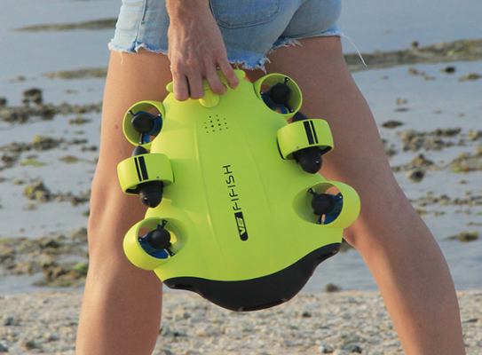
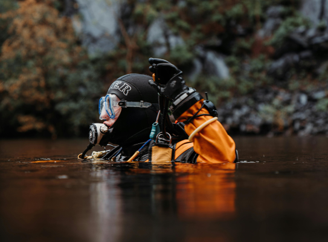

COMO FUNCIONA
Unimos técnologia, análise de dados e pessoas que querem fazer a diferença no planeta em uma missão de resgate. Nosso foco principal é evitar que o lixo chegue aos oceanos, através da limpeza de rios, lagoas e praias
-

ANÁLISE E MAPEAMENTO
Realizamos o mapeamento e análise de lagos, rios e praias utilizando drones anfíbios de alta técnologia.
Os drones são equipados com camera, e sensores e capturam informações como imagens dos destritos, qualidade da água, riscos em potênciais da região mapeada e detalhes sobre materiais poluentes encontrados.
Essas informações são enviadas em tempo real para a base da aplicação para registro.
-
Classifição e notificação
Nosso sistema classifica as informações coletadas sobre aquela região, atribuindo um nível de risco e de esforço da limpeza, tempo estimado, e gerando automaticamente uma recompensa proporcional
Enviamos uma notificação para os mergulhadores voluntários cadastrados passando informações da missão, materiais sugeridos para a coleta, e dicas de cuidados que devem ser tomados
-

Hora de mergulhar
Os mergulhadores aceitam a missão e no dia da coleta se encontram no local combinado. Durante o mergulho são acompanhados por professores de mergulho parceiros do projeto.
Ao fim da missão, todos os mergulhadores recebem uma recompensa pelo trabalho, podendo variar de um valor monetário, equipamentos, cursos, entre outros.
Todo lixo coletado é depositado em postos de coleta autorizados e destinado para artesões parceiros e orgãos governamentais
Nossos benefícios
Monitoramento
Através da tecnologia monitoramos continuamente a poluição nos corpos d'água. As informações em tempo real do aplicativo ajudam a identificar áreas críticas, direcionar esforços de limpeza, analisar tendências e avaliar o progresso ao longo do tempo.
Segurança
Os drones mapeiam grandes áreas rapidamente e com precisão, identificando a localização e tipo de detritos. Isso facilita a coleta direcionada pelos mergulhadores, que recebem informações sobre equipamentos recomendados, aumentando a eficiência e diminuindo riscos.
Recompensas
Incentivamos a participação na preservação dos ecossistemas aquáticos. As recompensas motivam os mergulhadores a contribuírem regularmente, aumentando o impacto positivo da iniciativa.
Seja um voluntário
Enviaremos instruções para os próximos passos
Você ainda não tem certificação de mergulho? Não se preocupe! Oferecemos cursos de mergulhos através de instrutores parceiros com preços acessíveis!